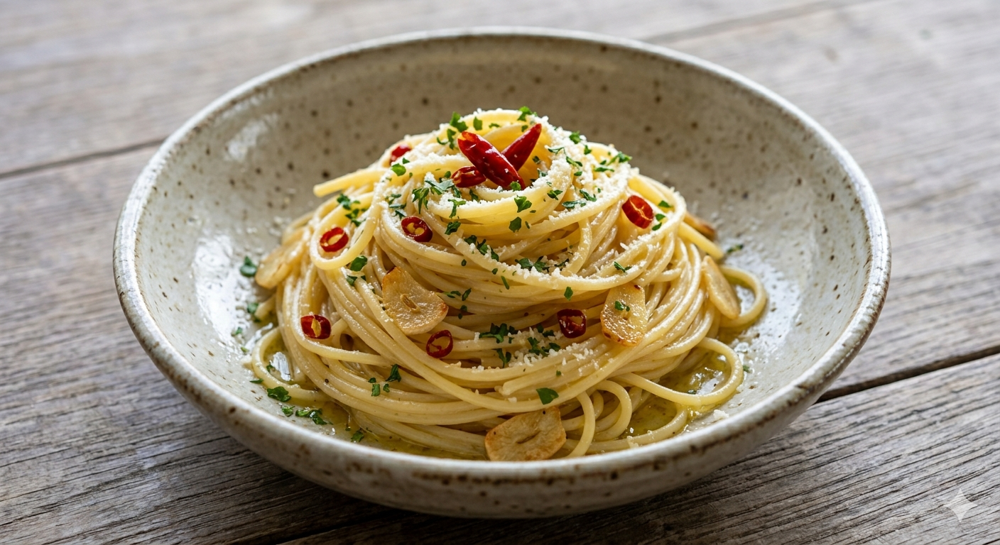
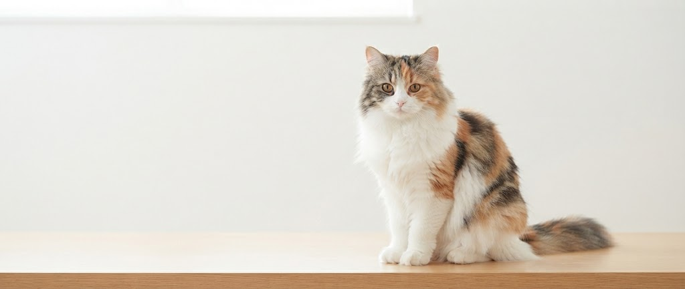

WHY MATATABI CAFE?
当店のパスタは全て自家製の生パスタ。もちもちとした麺ごたえは、厳選した小麦の配合と熟成が生み出します。ソースとの絡み具合は、一口食べればその違いに驚くはずです。
イチオシの「玄米ドライカレー」。プチプチとした玄米の食感と、じっくり煮込んだミートの深いコク。スパイスの香りが鼻を抜け、食べ終えた後の満足感は格別です。
ドアにしがみつく看板猫の「美人さん」。レトロな小物や緑玉に囲まれた店内は、まるで時間が止まったような静やかさ。日常の疲れをリセットできる、あなただけの場所です。
より身近に、もっと便利に。準備中の新しいサービスをご紹介します。
大好評のテイクアウトに加え、ウーバーイーツなどの宅配サービスを開始予定！ご自宅やオフィスでも、できたての生パスタやスパイシーなカレーをお楽しみいただけます。
「マタタビcafeの味をギフトや自宅で楽しみたい」という声にお応えし、冷凍生パスタ・自家製ソースセットやオリジナルブレンド珈琲豆の通販を準備中です。
「私の知る限り、生パスタで最高のお店」
もちもちかつ歯応えのある麺は乾麺には決して出せない特徴。ソースのクオリティは全て高く、パスタと食材の一体感はとても高い。（★5・30代女性）
「ナポリン辛め、すんごく旨かった‼️」
ドアにしがみついてる猫ちゃん、何を探してるのかな？落ち着く時間、美味しいパスタ最高だね。また伺います。（★4・40代男性）
店舗のご案内
ADDRESS
〒990-0073
山形県山形市大野目2丁目5-38
TEL
023-631-8556PARKING
店前駐車場は奥行きがタイトです。コンパクトカーでのご来店、または隣の敷地の宅用スペースをご利用ください。
CLOSED
毎週火曜日
